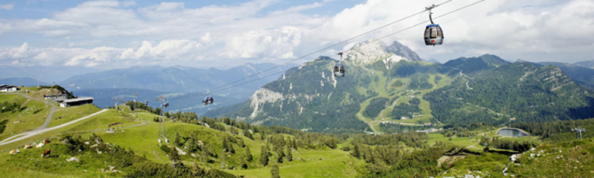

Anreise
Lage
Die Ferienwohnung findet man in ruhiger Lage, abseits der Hautpverkehrswege inmitten der Karnischen Region und in 3kn Entfernung von Tröpolach bzw. der Talstation des Milluniumsexpress auf das Nassfeld.